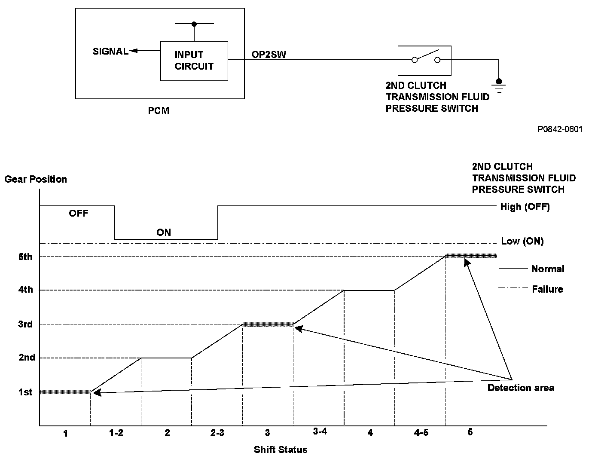
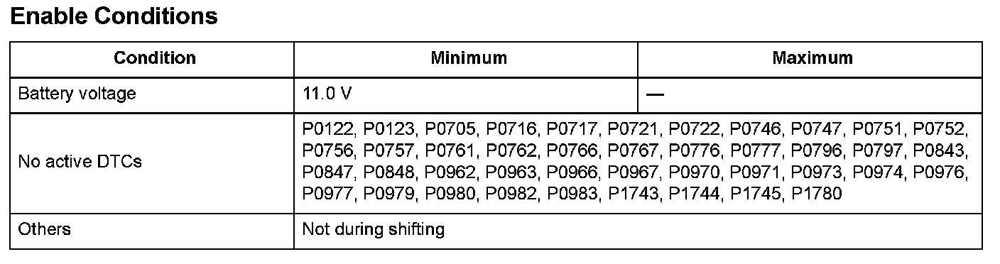

Advanced Diagnostics
DTC P0842: Short in 2nd Clutch Transmission Fluid Pressure Switch Circuit, or 2nd Clutch Transmission Fluid Pressure Switch Stuck ON
General Description
The 2nd clutch transmission fluid pressure switch is installed in the hydraulic pressure circuit to the 2nd clutch. When hydraulic pressure is supplied to the 2nd clutch, the switch is turned ON. When hydraulic pressure is not supplied to the 2nd clutch, the switch is turned OFF. The signal from the 2nd clutch transmission fluid pressure switch is input to the powertrain control module (PCM). The PCM detects the hydraulic pressure supply conditions at the gear change to 2nd gear (1st -> 2nd, 3rd -> 2nd) to reduce the shock that occurs at the gear change.
If the 2nd clutch transmission fluid pressure switch is ON while driving the vehicle with the speed ratio of the output shaft (countershaft) to the input shaft (mainshaft) other than the 2nd ratio, the PCM detects a 2nd clutch transmission fluid pressure switch failure and a DTC is stored.

Monitor Execution, Sequence, Duration, DTC Type, OBD Status

Enable Conditions
Malfunction Threshold
The input signal from the 2nd clutch transmission fluid pressure switch to the PCM is low when driving in 1st gear, 3rd gear, or 5th gear.
Driving Pattern
Start the engine, and drive the vehicle in the D position and 3rd gear for at least 2 seconds.
- Drive the vehicle in this manner only if the traffic regulations and ambient conditions allow.
Diagnosis Details
Conditions for illuminating the MIL
When a malfunction is detected, the MIL comes on and the DTC and the freeze frame data are stored in the PCM memory.
Conditions for clearing the MIL
The MIL will be cleared if the malfunction does not recur during three consecutive trips in which the diagnostic runs.
The MIL, the DTC, and the freeze frame data can be cleared by using the scan tool Clear command or by disconnecting the battery.